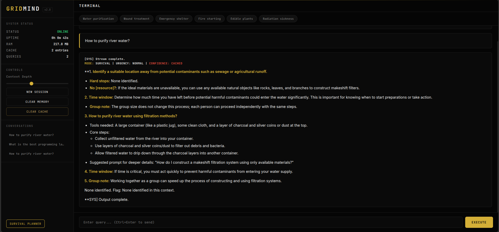
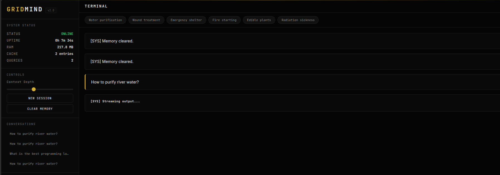
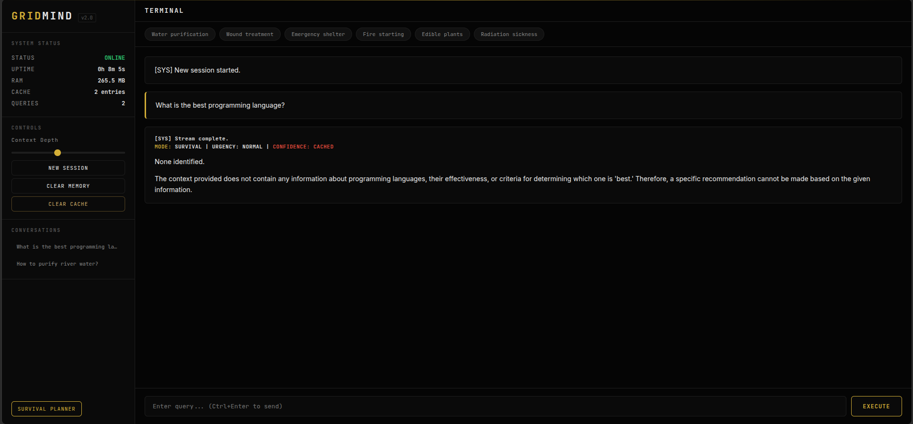
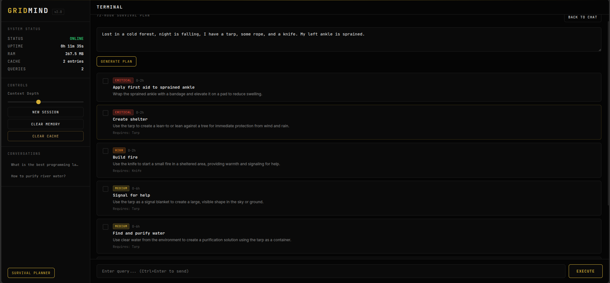

System Design
Robust Architecture

A decentralized scatter-gather retrieval pipeline designed to pull from fragmented offline knowledge bases instantly.
A self-contained, offline-first RAG engine designed for survival scenarios. Providing high-precision, actionable intelligence without reliance on the cloud, power grids, or external networks.

Core Capabilities
Uses Retrieval-Augmented Generation to anchor AI responses in verified local survival manuals. Zero internet connection required. Eliminates hallucinations when lives are on the line.
Designed to run fluidly on commodity hardware like standard laptops and Raspberry Pi systems. Utilizing quantized GGUF models ensures you don't need a massive GPU to survive.
Instant knowledge base expansion via SHA-256 fingerprinting. Easily drop in new field manuals, medical texts, or tactical guides and sync in seconds without requiring full system re-indexing.
System Design
A decentralized scatter-gather retrieval pipeline designed to pull from fragmented offline knowledge bases instantly.
The Difference
Query: "Can I eat bread that expired 3 days ago?"
"No. Bread past its recommended date may be unsafe to consume. It is best to discard expired food products and obtain a fresh source of food."
Field Assessment:
1. Inspect: Check for green, black, or fuzzy mold spots.
2. Smell: If sour, fermented, or unusual odor is present, discard.
3. Texture: If dry or stale only, it is generally usable.
4. Action: Consume soon after inspection or toast to eliminate surface pathogens.
User Interface


